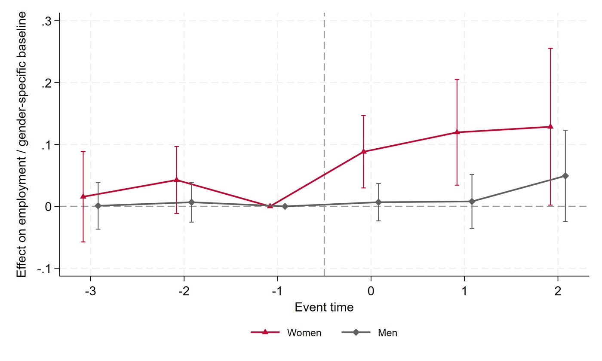

Gender Hiring Quotas
Draft available soon
Abstract
Gender quotas have mostly targeted corporate boards and done little for the gender employment gap. Requiring a minimum share of women in a firm's entire workforce would force firms to lay off workers or hire beyond their needs. A quota on new hires avoids these costs, but firms can comply and then undo its effect through separations. We study a novel type of quota: Italian firms that win public contracts must reserve for women at least 30 percent of the new hires needed for the project. Coverage depends on how contracts are funded, so similar contracts are awarded with and without the quota. Linking procurement records to employer-employee data and balance sheets, we compare winners of contracts with and without the quota in a matched difference-in-differences design. Three years after the award, female employment in firms subject to the quota is 11 percent higher than in comparable winners without it, with no difference for men, although some firms avoid the requirement by hiring less. Female separations rise once the contract ends, but do not fully offset the additional hires. The new jobs are mostly white-collar but temporary and part-time, with no effect on wages. We find no evidence of efficiency losses. Hiring quotas can bring women into male-dominated firms, but their effects partly fade once the obligation expires.
